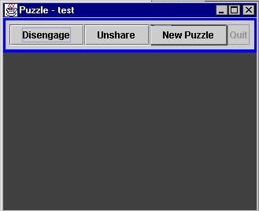
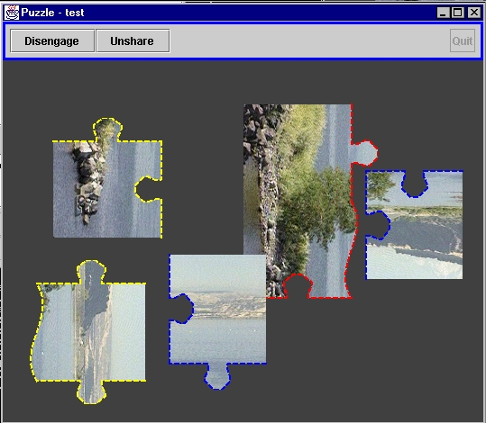

RoamingJigsaw, is a multi-player jigsaw assembly game. A group of players cooperate on the solution of the jigsaw puzzle in a disconnected fashion. They construct assemblies independently, share intermediate results, and acquire pieces from each other when connected. Play begins with one player loading the puzzle pieces to a shared tuple space. Any connected player sees the puzzle pieces of the other connected players and can select pieces they wish to work with. When a piece is selected, all connected players observe this as a change in the colored border of the piece, and within the system, the piece itself is moved to be co-located with the selecting player. When a player disconnects, the workspace does not change, but the pieces that have been selected by the departing player can no longer be selected and manipulated. From the perspective of the disconnected player, pieces whose border is tagged with the player's color can be assembled into clusters. Additionally, the player can connect to other players to further redistribute the pieces, and to view the progress made by the other players with respect to any clusters formed since last connected.
This application is based on a pattern of interaction where the shared workspace provides an accurate image of the global state of connected players but only weakly consistent with the global state of the system as a whole. The user workspace contains the last known information about each puzzle piece. It is interesting to observe that the globally set goal of the distributed application, i.e., the solution of the puzzle, is built incrementally through successive updates to the local state, distributed to all other players either immediately if connected or in a ``lazy'' fashion if connectivity is not available at that time.
examples/RoamingJigsaw directory. Start the puzzle by loading
LimePuzzleAgent using the standard Lime Launcher with the
following command:
java lime.util.Launcher -load LimePuzzleAgent
You can run additional puzzle agents on a different computer using the same command. To run another puzzle program on the same computer, execute the following command from a different window:
java lime.util.Launcher -quit -load LimePuzzleAgent
When each puzzle begins, it will ask you to enter the name of the puzzle game. All puzzle games with the same name will be able to share pieces. Enter a name in the box and continue. Next, the puzzle will ask you to choose a color. This is the color that will identify this player. Choose a color and continue. Next, the program asks if you would like to declare this host as the leader. Respond "yes" for one host; and "no" for all others. At this point, the initial puzzle screen will appear:
|  |
There will be four buttons on the screen: Engage/Disengage, Share/Unshare, New Puzzle, and Quit. If this host is the leader, the Engage/Disengage button will read "Disengage". Otherwise it will read "Engage". This indicates whether or not this host is engaged (or willing to share) with other hosts in the network. The button is a toggle--pressing this button when it reads "Engage" will engage the host; pressing this button when it reads "Disengage" will disengage the host. The second button is the Share/Unshare button. If this agent is the one who declared its host as the leader this button will initially read "Unshare". In all other cases, this button will read "Share" initially. This button is also a toggle; its status indicates whether or not this agent's tuple space is public or private. Pressing this button when it reads "Share" will cause the tuple space to become public. Conversely, pressing it while it reads "Unshare" will make the agent's tuple space private. The New Puzzle button allows the agent to open an image and convert it to a puzzle, displaying the puzzle pieces on the screen. The Quit button exits the program. The Quit button is only enabled when the host is disengaged.
After one agent has started a new puzzle, the pieces will be displayed on that agent's screen. If the tuple space of the agent creating the puzzle is shared, the pieces will also be displayed on the screens of agents on the same host whose tuple spaces are also shared. If the host of the agent creating the puzzle is engaged, the pieces will also be displayed on the screens of agents on other hosts in the network that are also engaged (again, if the agents' tuple spaces are shared). When the puzzle pieces are displayed, they have a colored border around them. The color of this border indicates which agent is responsible for the piece.
Manipulating puzzle pieces. An agent can take responsibility of a piece belonging to another agent by right clicking on the piece. The border color of the piece will then change to indicate the color of the new responsible agent. You can move pieces by clicking them with the left button of the mouse and dragging them. You can rotate pieces by double clicking them, or, by pressing the space bar or arrow keys while selecting the piece with the left mouse button. When you move two pieces close together in the positions in which they will fit, they will snap together. To put together two pieces, an agent must be responsible for both pieces.
A puzzle in an intermediate state is shown below. The blue agent shown. It can be inferred that there are at least two other agents participating, red and yellow. The blue agent is currently sharing its pieces, and the host that it resides on is engaged in the Lime community:
|  |
When a LimePuzzleAgent begins, it requests from the user the name of the puzzle game. This name is used as the name of the agent's tuple space. When an agent creates a puzzle by loading a new puzzle, the picture is broken into the number of pieces specified. These pieces are then wrapped in tuples and placed in the tuple space using multiple out operations. When an agent takes over responsibility of a puzzle piece from another agent, the agent removes the tuple from the tuple space by performing an inp. The agent then returns the puzzle piece to its own tuple space with an out. Now the new agent is responsible for the puzzle piece, as designated by the change in the color of the piece. When an agent connects two puzzle pieces, the tuples corresponding to the two pieces being connected are removed from the tuple space (using two inp operations) and a new piece, the combined piece, is placed in the tuple space (using an out operation).
The puzzle pieces seen on an agent's screen are representations of the tuples it has seen in the tuple space. Every agent registers a ONCEPERTUPLE weak reaction that reacts to the presence of a new tuple corresponding to a new puzzle piece. When a new piece shows up, the agent reacts to the new tuple. In its reaction, it removes the old piece(s) from the screen and replaces it with the new one.
Hosts can only react to tuples in tuple spaces that their tuple spaces are engaged with and are shared. The sharing of the tuple spaces is accomplished by setting the tuple space to shared. The engaging of the tuple spaces is accomplished by engaging the host, which makes the tuple space available for operations and reactions from hosts in the network.